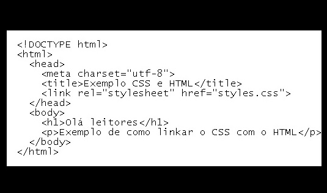
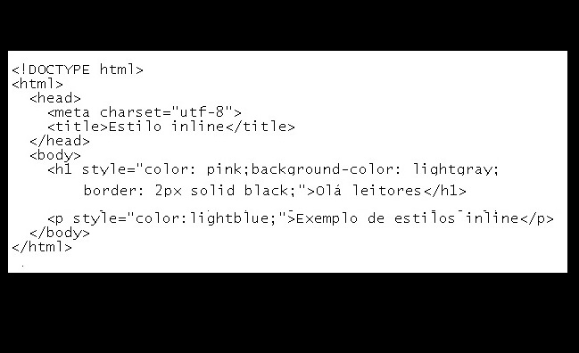
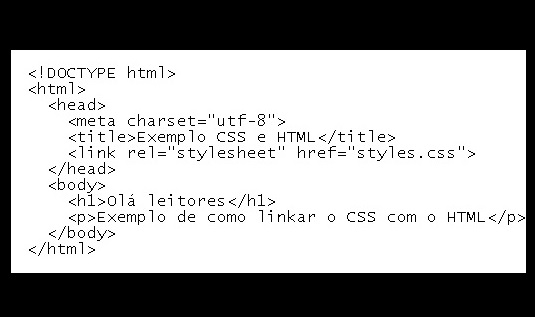
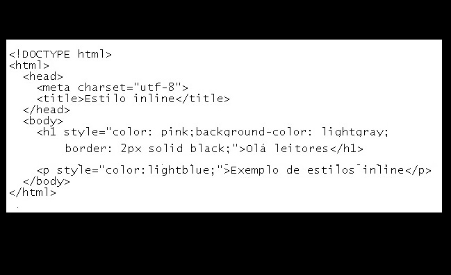

CSS & dicas para estilização
"Ícone do CSS"
O que é CSS?
CSS significa Cascading Style Sheets. É uma linguagem de estilo usada para definir a aparência e layout de páginas da web, permitindo que os desenvolvedores mudem facilmente o estilo sem afetar o conteúdo. Isso inclui a alteração de tamanho, cor e fonte de texto, bem como o posicionamento de elementos na página,tornando a aparência da página mais atraente e funcional.
É importante aprender CSS?
O CSS é fundamental para o desenvolvimento de páginas web e é uma linguagem importante para quem pretende trabalhar nessa área.
Aprender CSS permite atuar em diversos estilos de projetos, como no desenvolvimento de sites para web, aplicativos online, temas, templates e soluções visuais para sites em conjunto com programadores e designers.
O CSS é difícil de aprender?
O CSS é uma linguagem vasta e única com diversas formas interessantes de desenvolver aplicações, porém, dominar os recursos avançados requer dedicação e determinação. O alto nível de tecnicidade torna o CSS uma tecnologia difícil de aprender em comparação com outras do mercado e seus paradigmas são considerados não muito amigáveis.
O que aprender primeiro, HTML, CSS ou JavaScript?
JavaScript é utilizado para criar sites interativos, mas para isso, é necessário criar a estrutura com HTML. Para ter uma boa parência visual, usa-se o CSS. É fundamental conhecer os fundamentos de HTML e CSS antes de utilizar o JavaScript.
"HTM- JS- CSS"
Como relacionar HTML e CSS?
O CSS é uma linguagem de folha de estilo que permite estilizar páginas HTML, separando a formatação do conteúdo. As regras de CSS são compostas por um seletor, propriedade e valor e formam folhas de estilo interpretadas pelo navegador para aplicar aos elementos do documento. A estrutura básica do CSS é uma folha de estilo externa que é linkada ao HTML. É possível aprender CSS seguindo algumas dicas e é importante aprender a utilizá-lo corretamente para trabalhar em projetos web.
Quer dicas para aprender CSS com facilidade?
Então vamos lá!!!
1- Organizar os estudos de forma eficiente;
2- Aprender como formatar o CSS corretamente;
3- Estudar códigos prontos para compreender seu funcionamento;
4- Participar de grupos de discussão sobre CSS;
5- Desenvolver projetos e atividades práticas para aliar o conhecimento teórico ao estudo prático.
CONSIDERAÇÃO: A ideia é tornar o aprendizado do CSS mais fácil e eficiente, com planejamento e prática, além de compreender as boas práticas e estruturas da linguagem.
O que é Sintaxe do CSS?
A sintaxe CSS é a estrutura e a gramática da linguagem de estilo. É a maneira como o CSS é escrito e organizado para aplicar estilos a um documento HTML.
A sintaxe básica do CSS consiste em um seletor que especifica qual elemento HTML será estilizado, seguido por um conjunto de priedades e seus valores. Por exemplo:
seletor {
propriedade: valor;
propriedade: valor;
}
O seletor pode ser um elemento HTML, uma classe ou um ID,permitindo que os estilos sejam aplicados a elementos específicos ou a grupos de elementos. As propriedades definem o estilo que será aplicado, como a cor do texto ou o tamanho da fonte. Os valores são os parâmetros que a propriedade recebe, como "vermelho" para a cor do texto ou "14px" para o tamanho da fonte.
Existem muitas outras partes da sintaxe do CSS, incluindo seletores avançados, unidades de medida, comentários e muito mais.
Outros Exemplos:
Seletores de tipo
h1{
color: #d1586d;
}
//Seletores universais
*{
color: #792f3b;
}
//Seletores descendentes
ul em{
color: #ee2546;
}
//Seletores de classe
.teste{
color: #7a255a;
}
//Seletores de Id
#teste{
color: #bd83a7;
}
//Seletores Filhos
body > p{
color: #7a5a6e;
}
//Seletores de atributos
input [type = "text"]{
color: #57374b;
}
//Seletores de agrupamento
h1, h2, h3{
color: #a75688;
O que é uma estrutura básica do CSS?
A estrutura básica do CSS é composta por três partes principais: seletor, propriedade e valor.
1- Seletor: O seletor é usado para selecionar um ou mais elementos HTML aos quais se deseja aplicar um estilo. Pode ser um nome de tag, uma classe, um ID ou um seletor avançado.
2- Propriedade: A propriedade define o estilo que se deseja aplicar sao elemento selecionado. Existem centenas de propriedades CSS que podem ser usadas, como cor, fonte, tamanho, margem, preenchimento e muito mais.
3- Valor: O valor é o parâmetro da propriedade que define como o estilo deve ser aplicado. Por exemplo, se a propriedade for cor, o valor poderá ser "vermelho" ou "#FF0000" para definir a cor do texto.
A estrutura básica do CSS é geralmente escrita em um arquivo externo com extensão ".css" e é linkado ao arquivo HTML usando a tag no cabeçalho do documento. A separação entre HTML e CSS é uma prática recomendada, permitindo que os desenvolvedores alterem o estilo sem afetar o conteúdo do documento HTML.
Veja um exemplo de como linkar o arquivo CSS no HTML
"Linkando o CSS no HTML"
O arquivo CSS deve ter a extensão ".css" e ser referenciado no arquivo HTML usando a tag e o atributo href com o caminho do arquivo no sistema de arquivos. Veja o exemplo a seguir:
*{
box-sizing: border-box;
}
body{
font-family: "Helvetica Neue", "Helvetica", Helvetica, Arial, sans-serif;
font-size: 14px;
background-color: pink;
}
header{
background-color: #333;
height: 3em;
color: #FFF;
margin-bottom: 1em;
}
header h1{
font-size: 2em;
display:inline-block;
vertical-align: middle;
}
Embora seja possível armazenar o arquivo CSS na mesma página do HTML, é recomendável criar uma pasta separada para facilitar a manutenção do código. Para vincular o arquivo CSS, é possível usar exemplos de links diferentes, dependendo de onde o arquivo CSS estiver localizado no sistema.
"Linkando o CSS no head do HTML"
Saiba que é muito interessante é usar dentro do href o comando CTRL + Espaço no VSCode para localizar o arquivo CSS desejado (correto).
Folhas de estilo internas são usadas quando não há um arquivo CSS externo, e as propriedades do CSS são
estilizadas dentro do elemento style localizado no head do HTML. Vejamos um exemplo abaixo.
"Folha de estilo interna do CSS"
Os estilos inline são usados diretamente em um elemento específico do HTML e não devem ser usados por boas práticas de codificação, pois tornam a manutenção mais difícil e reduzem a legibilidade do código. Um exemplo de como os estilos inline aparecem no HTML é mostrado a seguir:
"Inline CSS"
Considerações
"Seu conhecimento e paixão pela matéria são evidentes, pois chegou até aqui.
Meus parabéns aluno, pela sua dedicação.
Espero que seja de bom proveito esse material.
Desejo-lhe sucesso!. Até a próxima!".
"Agora sim hem?
Você aprendeu o CSS e ja sabe como usá-lo.Basta agora, colocar em prática o seu aprendizado!!!"
Vamos lá?

Prof. Iraê César Brandão
Luck WayⓇ Informática
“...Não se concentre somente nos seu objetivos , concentre-se nos meios para se alcançar os seus objetivos...”

O que é uma estrutura básica do CSS?
A estrutura básica do CSS é composta por três partes principais: seletor, propriedade e valor.
1- Seletor: O seletor é usado para selecionar um ou mais elementos HTML aos quais se deseja aplicar um estilo. Pode ser um nome de tag, uma classe, um ID ou um seletor avançado.
2- Propriedade: A propriedade define o estilo que se deseja aplicar sao elemento selecionado. Existem centenas de propriedades CSS que podem ser usadas, como cor, fonte, tamanho, margem, preenchimento e muito mais.
3- Valor: O valor é o parâmetro da propriedade que define como o estilo deve ser aplicado. Por exemplo, se a propriedade for cor, o valor poderá ser "vermelho" ou "#FF0000" para definir a cor do texto.
A estrutura básica do CSS é geralmente escrita em um arquivo externo com extensão ".css" e é linkado ao arquivo HTML usando a tag no cabeçalho do documento. A separação entre HTML e CSS é uma prática recomendada, permitindo que os desenvolvedores alterem o estilo sem afetar o conteúdo do documento HTML.
Veja um exemplo de como linkar o arquivo CSS no HTML

"Linkando o CSS no HTML"
O arquivo CSS deve ter a extensão ".css" e ser referenciado no arquivo HTML usando a tag e o atributo href com o caminho do arquivo no sistema de arquivos. Veja o exemplo a seguir:
*{
box-sizing: border-box;
}
body{
font-family: "Helvetica Neue", "Helvetica", Helvetica, Arial, sans-serif;
font-size: 14px;
background-color: pink;
}
header{
background-color: #333;
height: 3em;
color: #FFF;
margin-bottom: 1em;
}
header h1{
font-size: 2em;
display:inline-block;
vertical-align: middle;
}
Embora seja possível armazenar o arquivo CSS na mesma página do HTML, é recomendável criar uma pasta separada para facilitar a manutenção do código. Para vincular o arquivo CSS, é possível usar exemplos de links diferentes, dependendo de onde o arquivo CSS estiver localizado no sistema.
"Linkando o CSS no head do HTML"
Saiba que é muito interessante é usar dentro do href o comando CTRL + Espaço no VSCode para localizar o arquivo CSS desejado (correto).
Folhas de estilo internas são usadas quando não há um arquivo CSS externo, e as propriedades do CSS são estilizadas dentro do elemento style localizado no head do HTML. Vejamos um exemplo abaixo.
"Folha de estilo interna do CSS"
Os estilos inline são usados diretamente em um elemento específico do HTML e não devem ser usados por boas práticas de codificação, pois tornam a manutenção mais difícil e reduzem a legibilidade do código. Um exemplo de como os estilos inline aparecem no HTML é mostrado a seguir:

"Inline CSS"
Considerações
"Seu conhecimento e paixão pela matéria são evidentes, pois chegou até aqui.
Meus parabéns aluno, pela sua dedicação.
Espero que seja de bom proveito esse material.
Desejo-lhe sucesso!. Até a próxima!".
"Agora sim hem?
Você aprendeu o CSS e ja sabe como usá-lo.Basta agora, colocar em prática o seu aprendizado!!!"
Vamos lá?
Prof. Iraê César Brandão
Luck WayⓇ Informática
“...Não se concentre somente nos seu objetivos , concentre-se nos meios para se alcançar os seus objetivos...”
Você aprendeu o CSS e ja sabe como usá-lo.Basta agora, colocar em prática o seu aprendizado!!!"
Vamos lá?